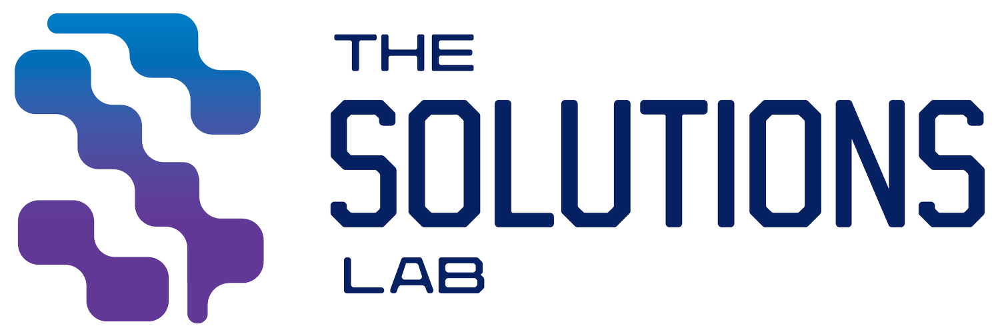

Obtain high-accuracy dimensional measurements across 20 distinct features (Locations A–T) of a mechanical knob to reproduce a fully constrained CAD model, evaluating how instrument precision, part geometry, and allowable tolerances dictate mechanical fit.
Technical Execution & Key Findings
Multi-Instrument Inspection: Measured internal, external, and depth features using a Dial Caliper, Micrometer, Gauge Pins, Gauge Blocks, and an Optical Comparator.
Measurement Uncertainty Comparison: Evaluated trade-offs between localized high-precision gauges and broader-range instruments across complex feature profiles.
Tolerance & Fit Specification: Established allowable dimensional error thresholds to ensure proper mating clearances without compromising part assembly.
CAD Model Reproduction: Translated empirical inspection data into a manufacturable 3D solid model.
Investigate how yield strength, ductility, and strain hardening govern metal formability between yield and fracture limits by fabricating a Carbon Steel 1008 enclosure and testing an Aluminum 6061 specimen to failure.
Technical Execution & Key Findings
Sheet Metal Layout & Bending: Marked bend geometry on Carbon Steel 1008 using a combination square and scriber, then sheared and formed edges on a sheet metal bender.
Resistance Spot Welding: Joined structural box seams using calibrated spot welding parameters for rigid assembly.
Destructive Tensile Testing: Stretched an Aluminum 6061 specimen until fracture to capture real-time load and elongation data.
Stress–Strain Curve Characterization: Calculated Modulus of Elasticity, Yield Strength, Ultimate Tensile Strength (UTS), and ductility to map elastic-to-plastic transitions.
Core Competencies
Carbon Steel 1008Aluminum 6061Sheet Metal BendingSpot WeldingTensile TestingStress–Strain Analysis
Manual Milling, Cutting Force Modeling & Surface Finish
Objective
Machine a precision mold insert capable of producing repeatable injection-molded parts with high surface finish, paired with computational modeling of cutting forces and surface roughness parameters.
Technical Execution & Key Findings
Precision Milling & Setup: Indexed workpiece datums with a 0.200" edge finder; machined cavity geometries using 1/4" and 1/2" end mills and a 3/16" ball end mill.
Holemaking & Tapping: Drilled precision mounting holes with a #7 drill bit and tapped internal threads with a 1/4-20 hand tap.
Cutting Force Estimation (Virtual Lab 1): Modeled theoretical cutting forces as a function of feed rate, depth of cut, and spindle speed.
Surface Roughness Evaluation (Virtual Lab 2): Calculated measured roughness from surface profile data and compared results against idealized tool-geometry predictions.
Flexible Sensor Integration, Wireless Power & Closed-Loop Monitoring
Objective
Design conformal wearable sensor architectures and battery-free RF circuits that maintain high signal-to-noise ratios under dynamic physiological motion and soft-tissue deformation.
Technical Execution & Key Findings
Soft Substrate & RF Coil Integration: Fabricated flexible PCB interconnects and tuned impedance matching networks for reliable wireless power and telemetry transfer.
Multimodal Sensor Validation: Benchmarked ground reaction force sensors and inertial measurement units (IMUs) across dynamic loading conditions.
Soft WearablesRF Impedance TuningIMU & Force SensorsPCB SolderingFlow-Loop Validation
🧠 Clinical Ergonomics & Community Behavioral Workflows
Human Factors & Ed
Usability Inspection, Field Training Protocols & Quantitative Coding
Objective
Bridge technical engineering systems with real-world human operators by auditing medical device usability for low-resource clinics and structuring evidence-based communication training protocols.
Technical Execution & Key Findings
Human Factors Equipment Auditing: Inspected and categorized clinical hardware for intuitive operation and reliability across 10+ global healthcare systems.
Behavioral Study Architecture: Built standardized data collection pipelines for 150+ participants evaluating structured transparency communication.
Quantitative Content Coding: Wrote Python scripts to systematically score and analyze behavioral response effectiveness.

Core Competencies
Human Factors EngineeringUsability AuditingPython Data CodingStudy Protocol DesignStakeholder Training
Want to dive deeper into lab publications & trials?